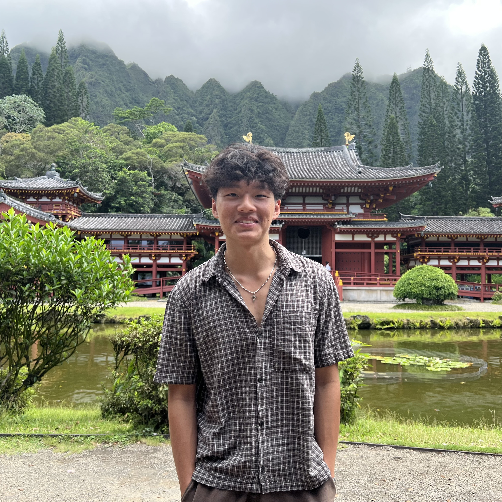

I’m a Computer Science student at El Camino College with a 4.0 GPA, preparing to transfer to a four-year university. I have a strong foundation in object-oriented programming and data structures, and I enjoy solving problems through code. I’ve developed a Discord bot using JavaScript and have experience working with Java, C++, and web technologies. I’m currently focused on growing as a full-stack developer and building projects that apply my skills in real-world scenarios.

My interest in programming started through hands-on projects, including building a Discord bot using JavaScript. Through this, I gained experience working with APIs and creating practical tools that improve user interaction. I’ve also worked with Java, C++, and web technologies, continuing to expand my technical skill set.
I focus on building projects that are both functional and meaningful, applying what I learn in class to real-world scenarios. Rather than just understanding concepts, I aim to implement them in ways that reinforce my problem-solving abilities and development skills.
Currently, I’m working on improving my full-stack development skills and building a stronger portfolio. My goal is to transfer to a university and pursue a career as a software engineer, where I can contribute to impactful and scalable software solutions.